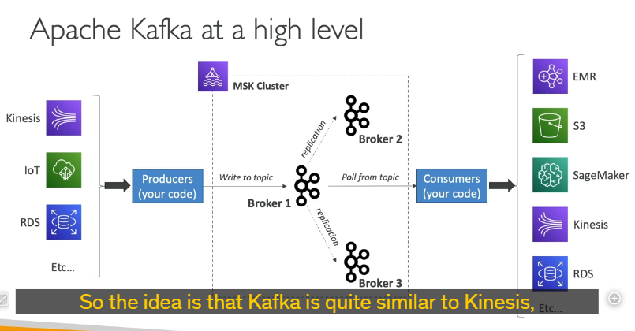
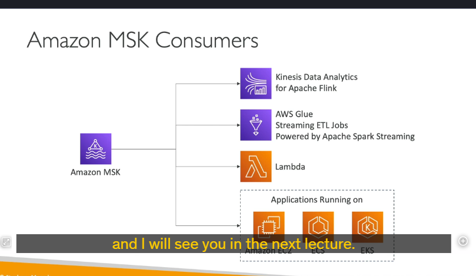

Msk
Amazon Managed Streaming for Apache Kafka (Amazon MSK)
Amazon MSK là một dịch vụ được quản lý bởi AWS, giúp bạn dễ dàng triển khai và quản lý các cụm Apache Kafka trên nền tảng đám mây của AWS. Apache Kafka là một nền tảng mã nguồn mở dùng để xử lý luồng dữ liệu (data streaming) theo thời gian thực, tương tự như Amazon Kinesis, nhưng có một số khác biệt quan trọng.
Apache Kafka là gì?
- Apache Kafka là một hệ thống messaging phân tán, được thiết kế để xử lý các luồng dữ liệu lớn theo thời gian thực.
- Một cụm Kafka bao gồm nhiều broker nodes (các máy chủ xử lý dữ liệu) và Zookeeper nodes (quản lý cấu hình và đồng bộ hóa).
- Kafka hoạt động dựa trên mô hình publish-subscribe:
- Producers (nhà sản xuất dữ liệu) gửi dữ liệu vào các topics (chủ đề).
- Consumers (người tiêu dùng dữ liệu) đọc dữ liệu từ các topics này.
Cách thức hoạt động của Amazon MSK
-
Triển khai cụm Kafka:
-
Amazon MSK cho phép bạn tạo, cập nhật và xóa các cụm Kafka một cách dễ dàng.
- AWS tự động quản lý các broker nodes và Zookeeper nodes trong cụm Kafka của bạn.
-
Cụm Kafka được triển khai trong VPC (Virtual Private Cloud) của bạn, trải rộng trên nhiều Availability Zones (AZ) để đảm bảo tính sẵn sàng cao (high availability).
-
Tự động phục hồi:
-
Amazon MSK cung cấp khả năng tự động phục hồi từ các lỗi phổ biến của Kafka.
-
Dữ liệu được lưu trữ trên các EBS volumes (Elastic Block Store) và có thể được lưu giữ trong thời gian dài tùy theo nhu cầu của bạn.
-
MSK Serverless:
- Amazon MSK cung cấp tùy chọn MSK Serverless, cho phép bạn chạy Apache Kafka mà không cần phải quản lý cơ sở hạ tầng.
- AWS tự động cung cấp tài nguyên tính toán và lưu trữ, đồng thời tự động mở rộng (scale) dựa trên nhu cầu của bạn.
Cách Kafka hoạt động

-
Producers:
-
Các producers (ví dụ: ứng dụng IoT, cơ sở dữ liệu RDS, Kinesis, v.v.) gửi dữ liệu vào các Kafka topics.
-
Mỗi topic được phân chia thành nhiều partitions (phân vùng) để xử lý song song.
-
Brokers:
-
Các brokers lưu trữ và sao chép dữ liệu từ các topics trên nhiều nodes để đảm bảo tính sẵn sàng cao.
-
Consumers:
- Các consumers (ví dụ: ứng dụng Flink, Glue, Lambda, v.v.) đọc dữ liệu từ các topics và xử lý chúng.
- Dữ liệu sau khi xử lý có thể được gửi đến các dịch vụ như EMR, S3, SageMaker, Kinesis, hoặc RDS.
So sánh giữa Kinesis Data Streams và Amazon MSK
| Đặc điểm | Kinesis Data Streams | Amazon MSK |
|---|---|---|
| Giới hạn kích thước tin nhắn | Mặc định 1 MB, có thể tăng lên. | Mặc định 1 MB, có thể cấu hình lên đến 10 MB. |
| Đơn vị phân vùng | Shards | Partitions (trong Kafka Topics) |
| Cách mở rộng | Shard Splitting (chia shard) và Merging (gộp shard). | Chỉ có thể thêm partitions, không thể xóa partitions. |
| Mã hóa dữ liệu | Hỗ trợ mã hóa trong quá trình truyền (in-flight encryption). | Hỗ trợ mã hóa trong quá trình truyền (TLS hoặc plain text). |
| Lưu trữ dữ liệu | Thời gian lưu trữ giới hạn (mặc định 24 giờ, tối đa 7 ngày). | Lưu trữ không giới hạn, miễn là bạn trả phí cho EBS. |
Cách sử dụng Amazon MSK

-
Tạo Kafka Producer:
-
Bạn cần tạo một Kafka Producer để gửi dữ liệu vào các topics trong cụm MSK.
-
Tiêu thụ dữ liệu từ MSK:
- Kinesis Data Analytics for Apache Flink: Sử dụng ứng dụng Flink để đọc dữ liệu trực tiếp từ cụm MSK.
- AWS Glue: Thực hiện các công việc ETL (Extract, Transform, Load) trên dữ liệu streaming bằng Apache Spark Streaming.
- AWS Lambda: Sử dụng Lambda với MSK làm nguồn sự kiện (event source).
- Tự viết Kafka Consumer: Bạn có thể viết consumer của riêng mình và chạy nó trên EC2, ECS, hoặc EKS.
Tóm tắt
- Amazon MSK là dịch vụ quản lý cụm Kafka trên AWS, giúp bạn dễ dàng triển khai và vận hành Kafka mà không cần quản lý cơ sở hạ tầng.
- Kafka hoạt động dựa trên mô hình publish-subscribe, với producers gửi dữ liệu vào topics và consumers đọc dữ liệu từ topics.
- MSK hỗ trợ MSK Serverless, tự động cung cấp tài nguyên và mở rộng theo nhu cầu.
- So với Kinesis Data Streams, MSK có một số khác biệt về giới hạn kích thước tin nhắn, cách mở rộng, và thời gian lưu trữ dữ liệu.